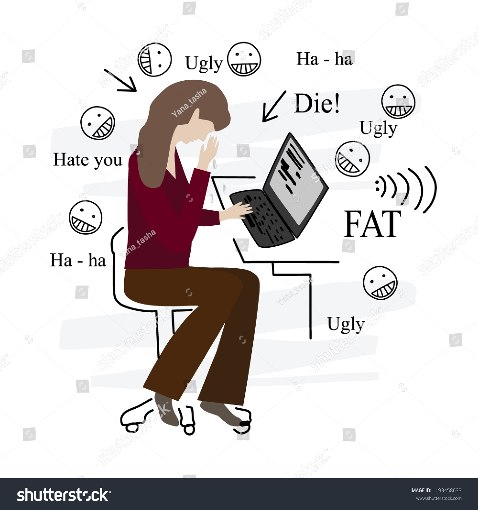

IIT fair cyber security and threat
CYBERSTALKING
Cyberstalking is the use of the Internet or other electronic means to stalk or harass an individual, group, or organization. It may include false accusations, defamation, slander and libel. It may also include monitoring, identity theft, threats, vandalism, solicitation for sex, doxing, or blackmail.
CYBERBULLYING

Cyberbullying or cyberharassment is a form of bullying or harassment using electronic means. Cyberbullying and cyberharassment are also known as online bullying. It has become increasingly common, especially among teenagers, as the digital sphere has expanded and technology has advanced.
Computer Virus

A computer virus is a type of computer program that, when executed, replicates itself by modifying other computer programs and inserting its own code. If this replication succeeds, the affected areas are then said to be "infected" with a computer virus, a metaphor derived from biological viruses.
CYBER SECURITY
Computer security, cybersecurity, or information technology security is the protection of computer systems and networks from information disclosure, theft of, or damage to their hardware, software, or electronic data, as well as from the disruption or misdirection of the services they provide.